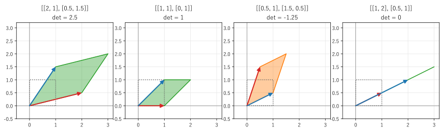

第 6 章 逆行列と行列式
線形写像で空間が潰れなければ、変換を元に戻せる。元に戻す変換を表すのが逆行列であり、空間が潰れるかどうかを 1 つの数で判定するのが行列式である。この章では、行列式を「面積や体積の拡大率」として導入し、その性質と計算方法、逆行列との関係を説明する。
逆行列
\(n\) 次の正方行列 \(A\) に対して
を満たす行列 \(X\) があるとき、\(X\) を \(A\) の逆行列といい、\(A^{-1}\) と書く。逆行列を持つ行列を正則行列という。線形写像として見ると、\(A^{-1}\) は「\(A\) による変換を元に戻す変換」である。
逆行列があれば、連立一次方程式 \(A\bm{x} = \bm{b}\) の解は、両辺に左から \(A^{-1}\) を掛けて \(\bm{x} = A^{-1}\bm{b}\) と書ける。解はただ 1 つに定まる。
逆行列には、次の性質がある。
\((A^{-1})^{-1} = A\)
\((AB)^{-1} = B^{-1}A^{-1}\)（順序が逆になる。「\(B\) の後に \(A\)」を元に戻すには、先に \(A\) を戻してから \(B\) を戻す）
\((A^\top)^{-1} = (A^{-1})^\top\)
すべての正方行列が逆行列を持つわけではない。例えば、第 4 章の x 軸への射影 \(\begin{pmatrix} 1 & 0 \\ 0 & 0 \end{pmatrix}\) は、\((1, 0)\) と \((1, 5)\) をどちらも \((1, 0)\) に移す。移った先の \((1, 0)\) を見ても元がどちらだったか分からないので、元に戻す変換は存在しない。
2 次の正方行列の逆行列は、次の公式で求められる。
右辺を \(A\) に掛けると単位行列になることは、直接計算すれば確かめられる。分母の \(ad - bc\) が 0 のときは逆行列が存在しない。この \(ad - bc\) が、2 次の正方行列の行列式である。
行列式の幾何学的な意味
2 次の正方行列 \(A\) の行列式 \(\det A = ad - bc\) には、はっきりした幾何学的な意味がある。\(A\) で単位正方形（\(\bm{e}_1\) と \(\bm{e}_2\) を 2 辺とする正方形）を変換すると、\(A\) の列ベクトル \(\bm{a}_1 = (a, c)\) と \(\bm{a}_2 = (b, d)\) を 2 辺とする平行四辺形になる。\(\det A\) は、この平行四辺形の符号付きの面積である（図 8）。

図 8 単位正方形（点線）の行き先と行列式。赤は e1 の行き先、青は e2 の行き先
線形写像では、どの図形の面積も同じ倍率で変わる（図形を小さな正方形の集まりとみなせば、各正方形が同じ形の平行四辺形に移るからである）。つまり、\(|\det A|\) は面積の拡大率である。
左端の行列は、面積を 2.5 倍にする。
左から 2 番目のせん断は、形を変えるが面積は変えない（\(\det = 1\)）。
右から 2 番目の行列は、行列式が負である。\(\bm{e}_1\) から \(\bm{e}_2\) へは反時計回りだが、その行き先の赤から青へは時計回りになっている。行列式の符号が負であることは、図形が裏返る（向きが反転する）ことを表す。第 4 章の反射の行列式は -1 である。
右端の行列は、2 つの列ベクトルが同じ直線の上にあり、平行四辺形が潰れて線分になる。面積は 0 なので \(\det = 0\) である。
3 次の正方行列の行列式は、3 本の列ベクトルを 3 辺とする平行六面体の符号付きの体積であり、\(n\) 次でも同様に \(n\) 次元の体積の拡大率である。
この見方から、本書で最も重要な定理の 1 つが得られる。
重要
正方行列 \(A\) について、次の条件は同値である。
\(\det A \ne 0\)
\(A\) は正則である（逆行列を持つ）
任意の \(\bm{b}\) について、\(A\bm{x} = \bm{b}\) の解がただ 1 つ存在する
\(A\bm{x} = \bm{0}\) の解は \(\bm{x} = \bm{0}\) だけである
\(A\) の列ベクトルは線形独立である（第 7 章）
\(A\) のランクは \(n\) である（第 8 章）
\(\det A = 0\) なら、\(A\) は空間を低い次元に潰すので、元に戻せない。また、潰れた先の空間に入らない \(\bm{b}\) については解が存在せず、入る \(\bm{b}\) については解が無数にある。
行列式の性質
行列式には、次の性質がある。どれも「体積の拡大率」として考えると自然である。
性質 |
意味 |
|---|---|
\(\det(AB) = \det A \det B\) |
変換を続けて行うと、拡大率は掛け算になる |
\(\det A^{-1} = 1 / \det A\) |
元に戻す変換の拡大率は逆数になる |
\(\det A^\top = \det A\) |
行と列を入れ替えても行列式は変わらない。そのため、以下の「行」についての性質は「列」についても成り立つ |
2 つの行を入れ替えると、符号が反転する |
向きが反転する |
1 つの行を \(k\) 倍すると、\(k\) 倍になる |
1 辺を \(k\) 倍すると体積は \(k\) 倍になる |
ある行に別の行の定数倍を加えても、変わらない |
せん断は体積を変えない |
三角行列の行列式は、対角成分の積である |
三角行列は、せん断（体積を変えない）を繰り返して対角行列に変形できる。対角行列は各軸を対角成分の倍率で伸ばす |
2 つの行が等しい（または 1 つの行がすべて 0 の）行列の行列式は 0 である |
平行六面体が潰れている |
\(\det(A + B) = \det A + \det B\) は一般に成り立たないことに注意する。
行列式の計算
3 次の正方行列の行列式は、次の式で計算できる（サラスの方法）。
一般の \(n\) 次の行列式は、余因子展開で、1 つ小さい行列式に帰着して計算できる。1 行目に沿って展開すると次のようになる。
ここで \(A_{1j}\) は、\(A\) から 1 行目と \(j\) 列目を取り除いた \((n-1)\) 次の行列である。
余因子展開は定義としては分かりやすいが、計算量が \(n!\) に比例するので、大きな行列には使えない（20 次で約 \(2.4 \times 10^{18}\) 回）。実用では、ガウスの消去法を使う。前進消去で使う「ある行に別の行の定数倍を加える」操作は行列式を変えないので、上三角行列にした後で対角成分（ピボット）を掛ければ行列式が得られる（行を入れ替えた場合は、その回数だけ符号を反転する）。計算量は \(O(n^3)\) である。第 5 章の例では、ピボットが 2、0.5、-1 だったので、行列式は \(2 \times 0.5 \times (-1) = -1\) である。
リスト 18 で、余因子展開による計算と NumPy の np.linalg.det()（消去法による）を比べ、行列式の性質を確かめる。
15def det_cofactor(a: Matrix) -> float:
16 """1 行目に沿った余因子展開で行列式を求める（n! に比例する計算量）."""
17 n = a.shape[0]
18 if n == 1:
19 return float(a[0, 0])
20 total = 0.0
21 for j in range(n):
22 minor = np.delete(np.delete(a, 0, axis=0), j, axis=1) # 1 行目と j 列目を除く
23 total += (-1) ** j * a[0, j] * det_cofactor(minor)
24 return total
余因子展開: det(a) = -1.0
np.linalg.det: det(a) = -1.0
det(b) = 25.000000
det(a @ b) = -25.000000
det(a) * det(b) = -25.000000
det(a.T) = -1.000000
行を入れ替えた行列の det = 1.000000
1 行目を 3 倍した行列の det = -3.000000
\(\det(AB) = \det A \det B\)、\(\det A^\top = \det A\)、行の入れ替えで符号が反転すること、行の 3 倍で行列式が 3 倍になることが確かめられる。
サンプルの全体：ch06_determinant.py
逆行列の計算
逆行列は、\(AX = I\) を解いて求められる。\(X\) の \(j\) 列目を \(\bm{x}_j\) とすると、これは \(n\) 個の連立一次方程式 \(A\bm{x}_j = \bm{e}_j\) である。係数行列が共通なので、LU 分解を一度行えば、それぞれを \(O(n^2)\) で解ける。第 5 章で \(\bm{b} = (1, 0, 0)\) の解が逆行列の 1 列目になると述べたのは、このためである。
余因子を使った逆行列の公式や、連立一次方程式の解を行列式の比で表すクラメールの公式もある。理論的には重要だが、計算量が大きいので、数値計算では使わない。
NumPy では、np.linalg.inv() で逆行列を求める。
12def report() -> None:
13 """逆行列の計算結果を表示する."""
14 a = np.array([[2.0, 1.0],
15 [5.0, 3.0]])
16 a_inv = np.linalg.inv(a)
17 with np.printoptions(precision=3, suppress=True):
18 print(f"det(a) = {np.linalg.det(a):.3f}")
19 print("a の逆行列 =")
20 print(a_inv)
21 print("a @ a_inv =")
22 print(a @ a_inv)
23
24 b = np.array([4.0, 11.0])
25 print("a_inv @ b =", a_inv @ b)
26 print("np.linalg.solve(a, b) =", np.linalg.solve(a, b))
27
28 singular = np.array([[1.0, 2.0],
29 [2.0, 4.0]])
30 try:
31 np.linalg.inv(singular)
32 except np.linalg.LinAlgError as error:
33 print("正則でない行列の逆行列:", error)
det(a) = 1.000
a の逆行列 =
[[ 3. -1.]
[-5. 2.]]
a @ a_inv =
[[ 1. 0.]
[-0. 1.]]
a_inv @ b = [1. 2.]
np.linalg.solve(a, b) = [1. 2.]
正則でない行列の逆行列: Singular matrix
\(\det A = 2 \cdot 3 - 1 \cdot 5 = 1\) なので、2 次の公式から \(A^{-1} = \begin{pmatrix} 3 & -1 \\ -5 & 2 \end{pmatrix}\) であり、計算結果と一致する。\(AA^{-1}\) の結果に表示される -0. は、丸め誤差による非常に小さな負の数を、小数点以下 3 桁で表示したものである。行列式が 0 の行列に np.linalg.inv() を使うと、LinAlgError という例外が送出される。
サンプルの全体：ch06_inverse.py
逆行列を求めて解くべきではない
数式では \(\bm{x} = A^{-1}\bm{b}\) と書くが、数値計算で連立一次方程式を解くときは、逆行列を求めずに np.linalg.solve(a, b) を使うべきである。理由は 2 つある。
計算量が大きい。逆行列を求めるには、LU 分解に加えて \(n\) 個の方程式を解く必要があり、
solve()のおよそ 3 倍の計算が必要になる。誤差が大きくなりやすい。逆行列を経由すると、丸め誤差が余分に入る。特に、第 13 章で扱う悪条件の行列では差が大きくなる。
逆行列そのものが必要な場合（例えば、統計で推定量の分散を求める場合）を除いて、「逆行列を掛ける」と書かれた数式は「連立一次方程式を解く」と読み替えて実装する。
この章のまとめ
逆行列 \(A^{-1}\) は、\(A\) による変換を元に戻す変換である。
行列式は、線形写像による面積（体積）の符号付きの拡大率である。負の符号は向きの反転を表す。
\(\det A \ne 0\) と、\(A\) が正則であることと、\(A\bm{x} = \bm{b}\) の解がただ 1 つであることは同値である。
行列式は、余因子展開ではなく、消去法で \(O(n^3)\) で計算する。
数値計算では、逆行列を求めて掛けるのではなく、
np.linalg.solve()で連立一次方程式を解く。